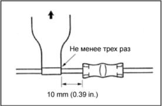

- УКАЗАНИЕ:
-
- Перед началом выполнения операции тщательно удалите загрязнения и смазку со всех частей соединения.
- Если клейкие поверхности двух лент соприкасаются, они пристают друг к другу и не разделятся, поэтому не снимайте обратную пленку, если не планируется использовать ленту.
- Не допускайте попадания на ленту масла, загрязнений и т.д.
-
Подготовьте около 100 мм (3,94 дюйма) силиконовой ленты (каталожный номер 08231-00045) и отделите пленку.
-
Растягивайте силиконовую ленту, пока ее ширина не уменьшится наполовину.
-
Оберните силиконовую ленту не менее трех раз вокруг втулки на расстоянии около 10 мм (0,39 дюйма) от конца втулки, растягивая ленту.
|
 |